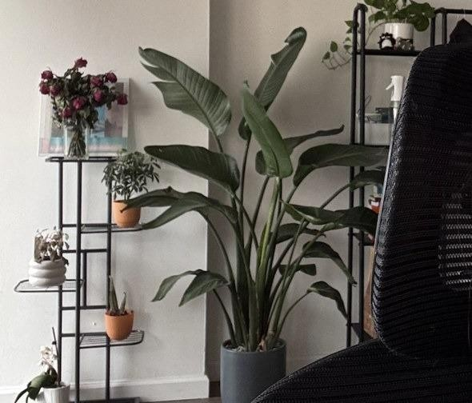
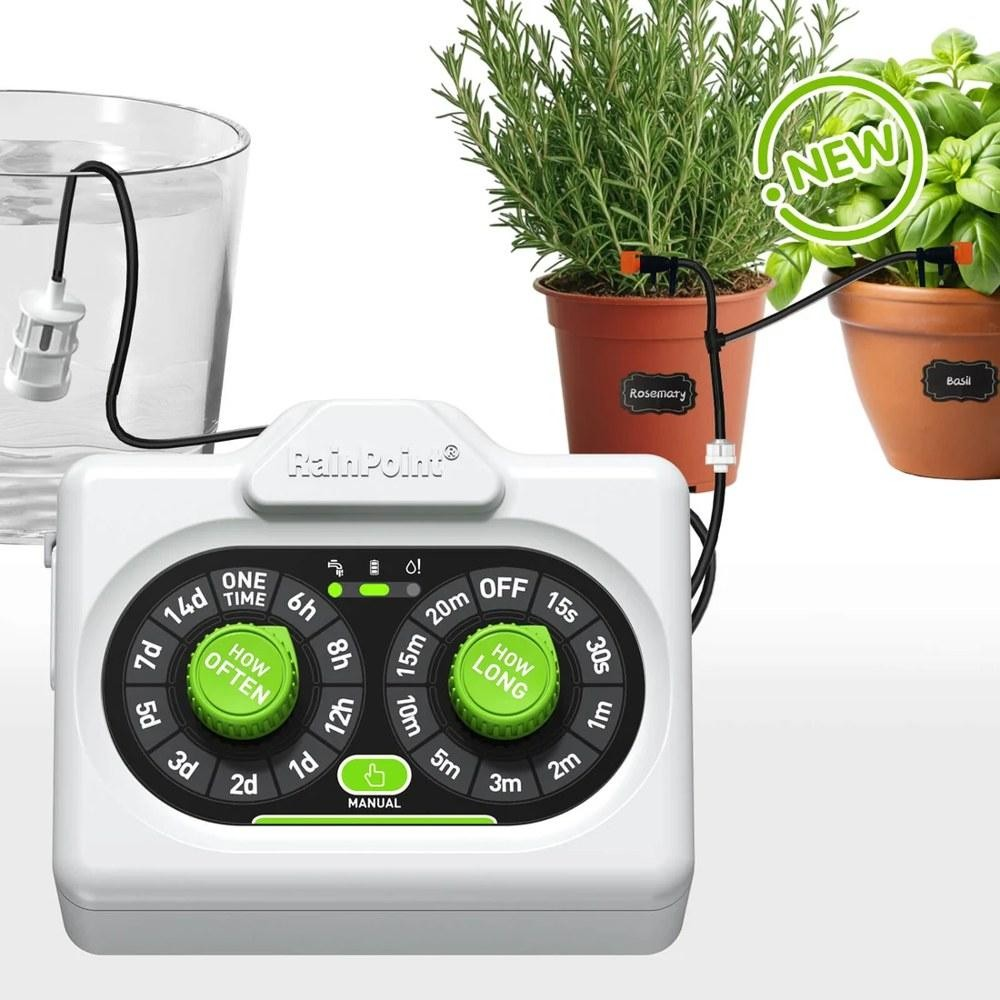
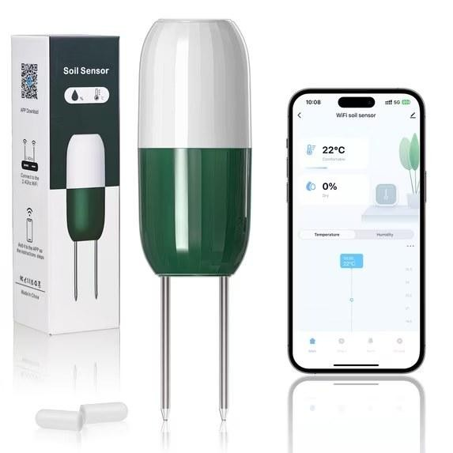

Plant Mood
Community Focus and Problem Definition
COMMUNITY
Young Urban Plant Parents
They live in small apartments, are out for long hours, and bring plants home to make the space feel alive.
PROBLEM
Plants Can't Say What They Need
Watering becomes guesswork.
“I just try to feel the soil and try not to overwater them.”



Source Phillips & Schulz (2021), Greening Home, Caring for Plants Indoors
Summary of Research and Discovery
MARKET RESEARCH

Automation
Reduces maintenance effort

Monitoring
Provides environmental data
Image sources RainPoint automatic watering timer; XinFuture WiFi soil moisture and temperature sensor (Walmart)
WHAT'S MISSING
Both focus on managing plants, not on the experience of understanding them.
KEY DISCOVERY
Plant care can be more than managing conditions. It can also be about understanding and caring for living things.
Feedback I’d Like to Receive
Clarity
Whether each state reads without my explanation
Sound
Whether it feels pleasant enough to live with at home
Mood
Whether the plant’s mood comes through without words
Plant Mood translates soil moisture into light, sound and a moving screen.
Key Themes from Playtesting Feedback
| Theme | What I Heard | What I Changed |
|---|---|---|
| Clearer signals |
|
Each state feels distinct. Good stays calm. Overwatered sounds underwater. |
| Better sound |
|
Softer, more pleasant tones. Rising = positive, falling = negative. Sounds fade out after a short time. |
| What to do, how urgent |
|
Dry pulses faster and turns red over time. Soggy flows like a slow wave. |
| Different plants |
|
Next step. Focused on one plant first. |
Live Demo
Watch the light, listen to the sound, and guess how the plant feels and what it needs.
- Dry
- Good
- Just watered
- Soggy
Upcoming Design Iterations
Test the new signals
With people who haven’t seen it
Refine the transitions
How light and sound move from one state to the next
Design and test the form
Does the light still read clearly in the pot?
Later
Support different plants